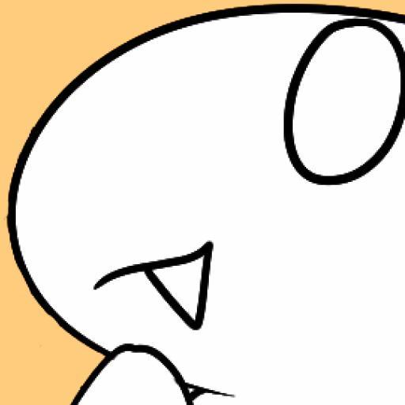
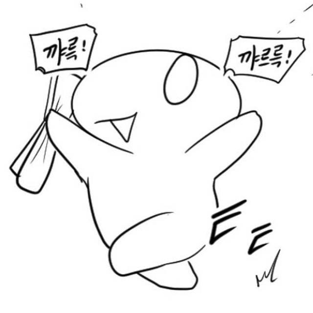

- 아이린
- 레바
- 읭읭이
- 동영상 코드삽입
읭읭이
인기
읭읭이는 개요에 서술되었듯 여성을 묘사할 땐 머리를 묶거나 꽃을 달고 있지만, 2014년 1월 나이트 나오는 만화를 시작으로 거유 캐릭터에 폭유수준의 가슴을 그리면서 기상천외할 정도로 흔들고촉추같다 다닌다. 실제로 던파 내에서 정말 시도 때도 없이 흔들리는 나이트의 가슴을 까기 위해서 넣었지만 이후 큐라레 콜라보때 델핀을 보고 읭읭이 델핀에 폭유를 달아 그걸로 수박을 부수는 만화를 연상하기도 하는걸로 봐선 나름의 개성으로 취급하는 듯 하다. 이렇듯 쉬워보이면서도 완전모작은 어려운 그림체에 힘입어 다양한 표현력, 작가 특유의 괴랄한 센스 덕분에 각종 커뮤니티에서 두터운 매니아 팬층이 형성되어 있다.

특징
짤에 나와있다시피 굉장히 폭력적이고 싸이코적인 모습을 보여주는데, 실제 작가의 블로그에 기재된 초창기 만화를 보면 많이 약화된 수준이다. 주로 한 읭읭이가 맛이 간 행동을 하면 그것을 다른 읭읭이가 폭력으로 응징하는 것이 작품의 묘미. 작가의 기기묘묘한 스토리 전개와 맞물려 가히 엄청난 파워의 아스트랄함과 병맛을 보여준다. 욕설도 상당히 많이 하는 편으로 네이버 도전만화에 올렸을 때는 "이젠 욕설은 못 할 것 같네요"라고 독자들에게 말하기도 했다.[5] 읭읭이가 잘 나오지 않는 다른 작품에선 검열삭제를 대신해서 나오는데, 슈트는 물론이고 방독면까지 착용하면서 자의식까지 뚜렷히 표현된다.

초기부터 변함없던 점이 있다면 읭읭이는 남녀구분이 단순하고, 모든 캐릭터들을 읭읭이로 표현하진 않는다. 보통 읭읭이의 머리가 깔끔하면 남자, 뒤통수에 꽃무늬나 헤어스타일이 있을시엔 여자인데 이런 요소를 떼게 되면 바로 남자로 취급된다